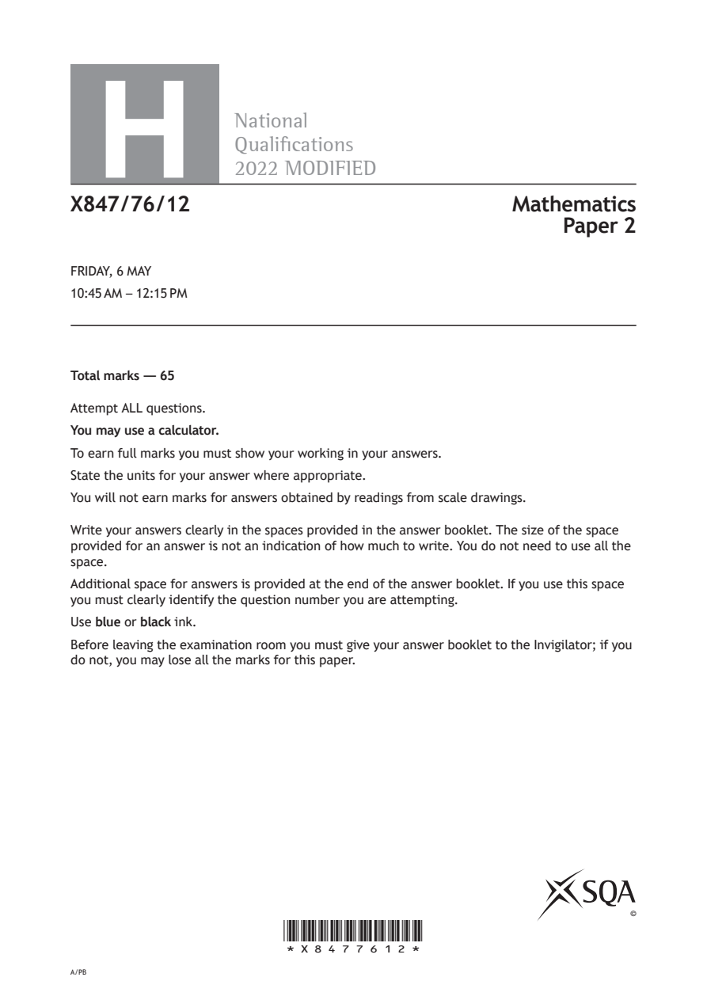
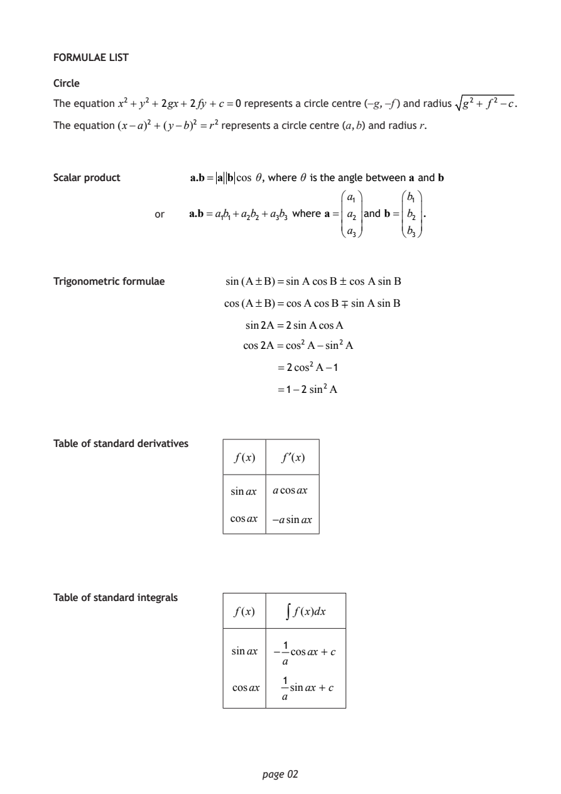
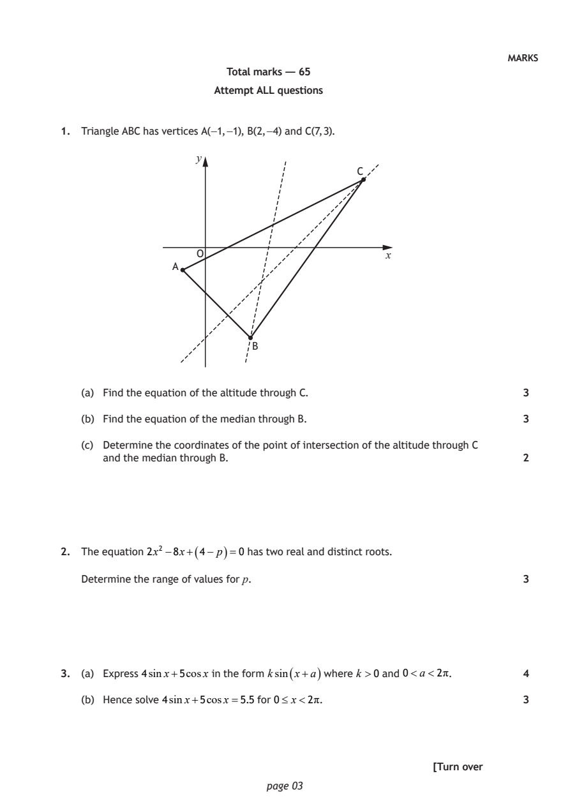
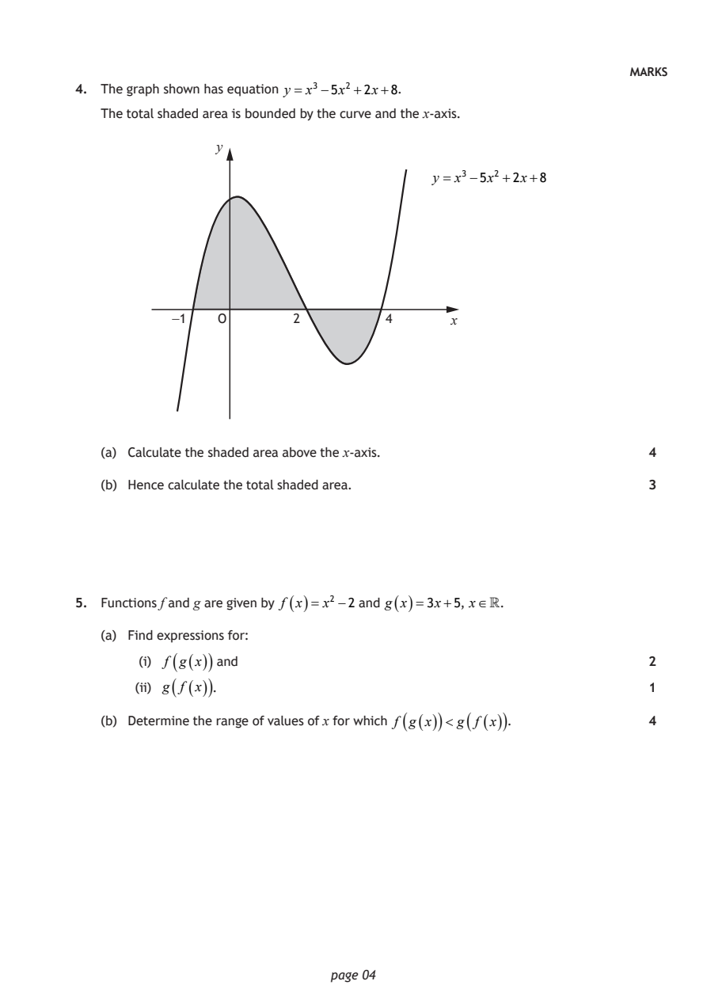
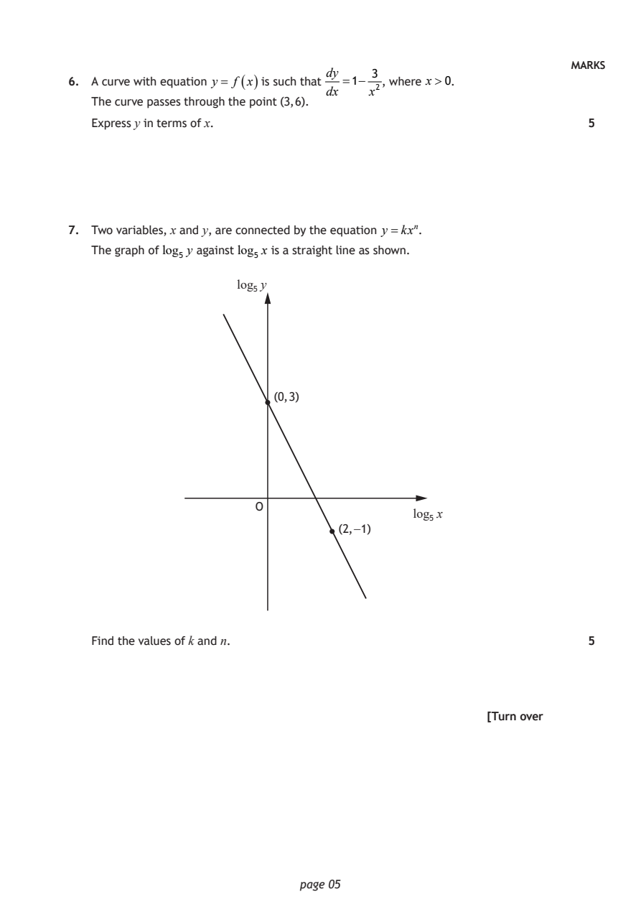
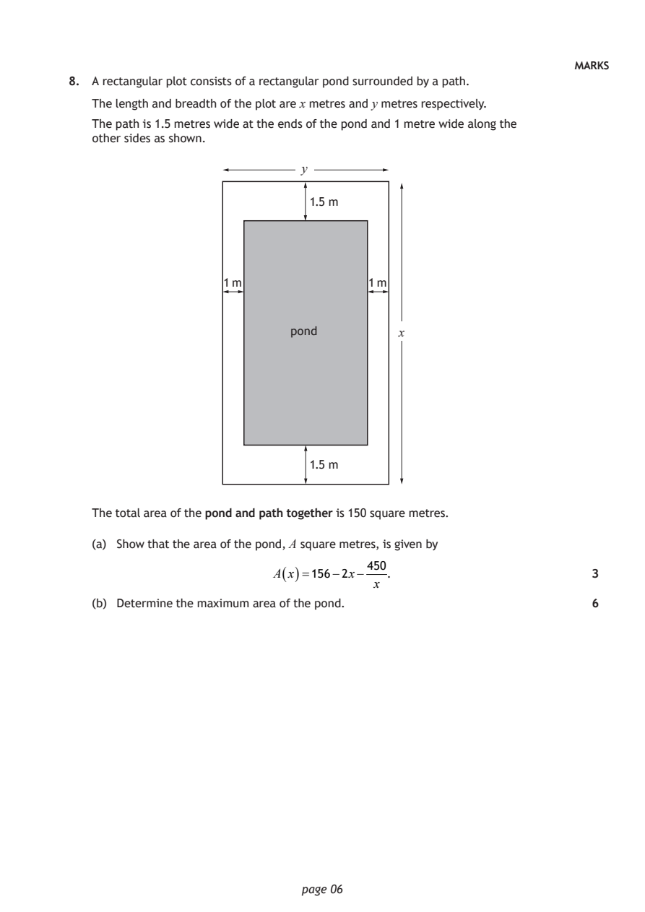
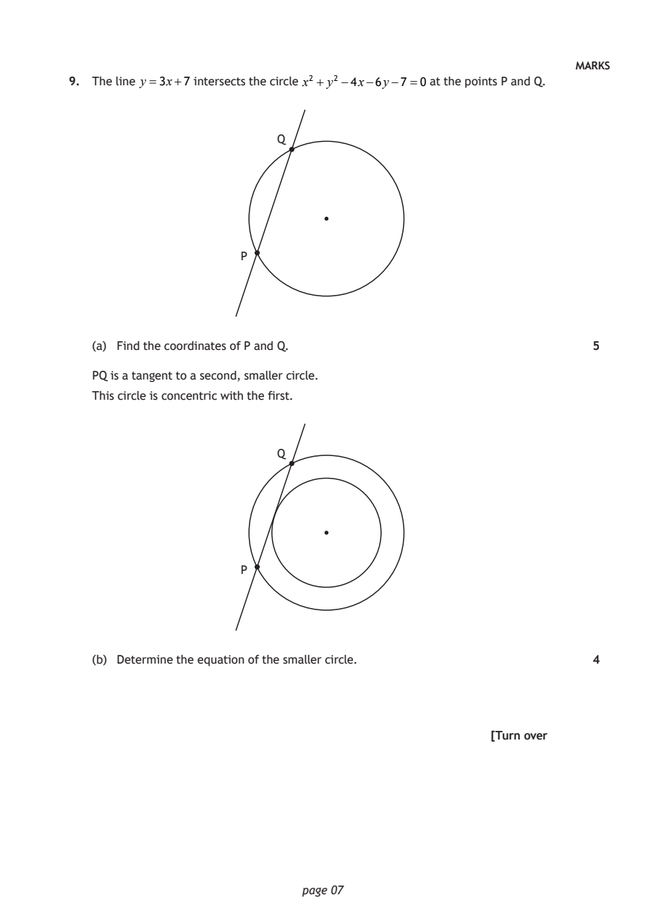
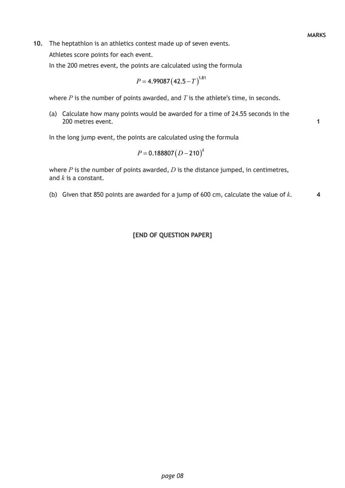

2022 Higher Mathematics - Paper 2 questions
Source: Scottish Qualifications Authority (SQA) / Qualifications Scotland. This is a StemInteract HTML companion, not an official HTML edition. Selectable text is supplied alongside original page images. Use the images or original PDF for equations, powers, fractions, vector notation, tables and diagrams; text extraction cannot fully preserve mathematical layout.
Jump to a question
PDF page 1

Selectable page text
H
National
Qualications
2022 MODIFIED
X847/76/12 Mathematics
Paper 2
FRIDAY, 6 MAY
10:45 AM – 12:15 PM
Total marks — 65
Attempt ALL questions.
You may use a calculator.
To earn full marks you must show your working in your answers.
State the units for your answer where appropriate.
You will not earn marks for answers obtained by readings from scale drawings.
Write your answers clearly in the spaces provided in the answer booklet. The size of the space
provided for an answer is not an indication of how much to write. You do not need to use all the
space.
Additional space for answers is provided at the end of the answer booklet. If you use this space
you must clearly identify the question number you are attempting.
Use blue or black ink.
Before leaving the examination room you must give your answer booklet to the Invigilator; if you
do not, you may lose all the marks for this paper.
©
*X8477612*
A/PBPDF page 2

Selectable page text
FORMULAE LIST
Circle
The equation x² + y²+ 2gx + 2fy + c=0 represents a circle centre (−g, −f ) and radius g² + f ² −c.
The equation (x−a)² + (y−b)² =r² represents a circle centre (a, b) and radius r.
Scalar product a.b= a b cos θ, where θ is the angle between a and b
a₁ b₁
or a.b=a₁b₁+a₂b₂ +a₃b₃ where a= a₂ and b= b₂ .
a₃ b₃
Trigonometric formulae sin(A±B)=sinA cosB ± cos AsinB
cos(A±B)=cosAcosB ∓ sinAsinB
sin2A =2sinAcosA
cos2A=cos²A−sin²A
=2cos²A−1
=1−2 sin²A
Table of standard derivatives
f(x) f′(x)
sinax acosax
cosax −asinax
Table of standard integrals
f(x) ∫ f(x)dx
1
sinax − cosax + c
a
1
cosax sinax + c
a
page 02PDF page 3
Paper 2, Question 1Paper 2, Question 2Paper 2, Question 3
Selectable page text
MARKS
Total marks — 65
Attempt ALL questions
1. Triangle ABC has vertices A(−1, −1), B(2, −4) and C(7, 3).
y
C
O x
A
B
(a) Find the equation of the altitude through C. 3
(b) Find the equation of the median through B. 3
(c) Determine the coordinates of the point of intersection of the altitude through C
and the median through B. 2
2. The equation 2x² −8x+( 4− p )=0 has two real and distinct roots.
Determine the range of values for p. 3
3. (a) Express 4sinx+5cosx in the form ksin ( x+a ) where k >0 and 0<a<2π. 4
(b) Hence solve 4sinx+5cosx=5.5 for 0≤ x<2π. 3
[Turn over
page 03PDF page 4
Paper 2, Question 4Paper 2, Question 5
Selectable page text
MARKS
4. The graph shown has equation y = x³−5x²+2x+8.
The total shaded area is bounded by the curve and the x-axis.
y
y = x³−5x²+2x+8
−1 O 2 4 x
(a) Calculate the shaded area above the x-axis. 4
(b) Hence calculate the total shaded area. 3
5. Functions f and g are given by f ( x )= x² −2 and g ( x )=3x+5, x.
(a) Find expressions for:
(i) f ( g ( x )) and 2
( ( ))
(ii) g f x . 1
(b) Determine the range of values of x for which f ( g ( x )) < g ( f ( x )) . 4
page 04PDF page 5
Paper 2, Question 6Paper 2, Question 7
Selectable page text
MARKS
dy 3
6. A curve with equation y = f ( x ) is such that =1− , where x>0.
dx x²
The curve passes through the point (3, 6).
Express y in terms of x. 5
7. Two variables, x and y, are connected by the equation y =kxⁿ.
The graph of log₅ y against log₅ x is a straight line as shown.
log₅ y
(0, 3)
O
log₅ x
(2, −1)
Find the values of k and n. 5
[Turn over
page 05PDF page 6
Paper 2, Question 8
Selectable page text
MARKS
8. A rectangular plot consists of a rectangular pond surrounded by a path.
The length and breadth of the plot are x metres and y metres respectively.
The path is 1.5 metres wide at the ends of the pond and 1 metre wide along the
other sides as shown.
y
1.5 m
1 m 1 m
pond x
1.5 m
The total area of the pond and path together is 150 square metres.
(a) Show that the area of the pond, A square metres, is given by
450
A
(
x
)=156−2x−
. 3
x
(b) Determine the maximum area of the pond. 6
page 06PDF page 7
Paper 2, Question 9
Selectable page text
MARKS
9. The line y =3x+7 intersects the circle x² + y² −4x−6y−7=0 at the points P and Q.
Q
P
(a) Find the coordinates of P and Q. 5
PQ is a tangent to a second, smaller circle.
This circle is concentric with the first.
Q
P
(b) Determine the equation of the smaller circle. 4
[Turn over
page 07PDF page 8
Paper 2, Question 10
Selectable page text
MARKS
10. The heptathlon is an athletics contest made up of seven events.
Athletes score points for each event.
In the 200 metres event, the points are calculated using the formula
P =4.99087 ( 42.5−T ) ¹^{.}⁸¹
where P is the number of points awarded, and T is the athlete’s time, in seconds.
(a) Calculate how many points would be awarded for a time of 24.55 seconds in the
200 metres event. 1
In the long jump event, the points are calculated using the formula
P =0.188807 ( D−210 ) ^{k}
where P is the number of points awarded, D is the distance jumped, in centimetres,
and k is a constant.
(b) Given that 850 points are awarded for a jump of 600 cm, calculate the value of k. 4
[END OF QUESTION PAPER]
page 08